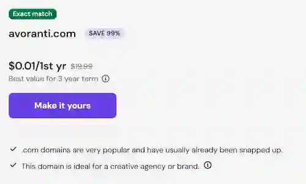
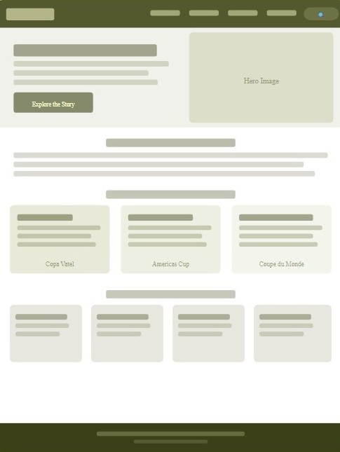

Site Name

AVORANTI
Suggested domain: avoranti.comWhy this name?
The Avoranti represents a "renowed" mexican chocolate company. The name "avoranti" comes from "avora"; which intends to resemble the word devora in spanish which means devours. And the part a-nti which means: "hostility, resistance, prevention". So in other words it means that you can not go against the idea to devour it.
Site Purpose
Avoranti is a mexican company of cocoa derivatives supplier. They created an special mention to Mexico's participation and achievements at the Coupe du Monde de la Pâtisserie 2021, held in Lyon, France, one of the most prestigious pastry competitions in the world. In 2021, Mexico broke its previous record of 13th place from 2011 by achieving its best historical result ever in 8th place.
The site documents Mexico's full journey: from the national selection through the Copa Vatel, to the continental qualifier at the Americas Pastry Cup, and finally their historic performance at the World Pastry Cup in France. It mentions the team members and their pastries and sculptures presented at the competition, shares a recipe from the team, and gives mention to the top three podium teams of the 2021 edition.
Site Structure
The Company - Avoranti
Talks about the journey of the company, the products they have, etc.
World Cup of Pastry 2021
Introduction to the categories and requirements to participation of that year. Letting the user know the theme the jury choose. And mentioning details about the jury or guest of honor as Cedric Grolet a renown French patissier.
The Mexico team and podium teams of 2021
Profiles of the team members and details on the themed desserts and showpieces they presented in each competition category.
Recipe Book
I was thinking a page with 2 or 3 recipes (using products of the brand) and one of those a recipe of the winning team of 2021 (Italy). So it will be actually 3 pages, but this page will be added in the nav just as the other ones above.
Scenarios
Well I choose to represent a "imaginary" chocolate industry cause in the event each team has to make chocolate sculptures. So since this event is quite particular and not so well known it made me more sense to be an important distributor than a newspaper, which actually the real news really lacked of information about Mexico's team. So since it's a Mexico company they are happy of this achivement, and people who buy from here are commonly pastry chefs or chocolatiers;in other words, people who work in this industry and know the prestige of this event and want to know a summary of Mexico's participation in all categories (frozen dessert, restaurant dessert, chocolate dessert to share, chocolate sculpture and sugar sculpture),without the hassle to the see event footage in youtube that sum around 21 hours cause the event last 2 days . So the scenarios are:
- How did Mexico qualify to compete at the 2021 Coupe du Monde de la Pâtisserie, and what categories was for 2021?
- Who were the pastry chefs on the Mexican team, and what specific desserts or showpieces did they present at the competition?
- How did Mexico place in 2021 compared to previous editions of the World Pastry Cup?
- Can I find a real recipe from a dessert the Mexican team actually made for the competition? - Well short answer no, well in 2021 I saw the live of Gustavo Barbabosa a team member making and giving the recipe of the frozen dessert category but now is no longer there. So none of Mexico' recipes are public now, but there are recipes of Italy's team (the one I will give is from the restaurant dessert category.)
- Who won the Coupe du Monde de la Pâtisserie 2021, and what did the podium teams created in each category?
Color Schema
The palette I will use is the one I have been using all along in my homeworks an olive green palette. Goes from the darkest (5) to the lowest green (1).I'm still a bit hesitant about the purpose of each color I might change it later, but I will use this palette.
Olive 5
hex code: #272b00
Usage: footer background, body text, nav.
Olive 4
hex code: #54582f
Usage: header, and backgrounds for h1 and h2 in cards like this one.
Olive 3
hex code: #86895d
Usage: Sections or background for links.
Olive 2
hex code: #bec092
Usage: Card highlight areas, feature note backgrounds, borders
Olive 1
hex code: #f8fbca
Usage: Main page background
Typography
Aside from the two fonts added just for the purpose of the logo, added using @font-face. I
will use 2 fonts for the content of the page, which are the ones used in this page right now:
Playfair Display
Used for: Page H1 title, all H2 and H3 section headings,
Crimson
Used for: p, general text.
Reason for This Subject
I chose this subject because I have been interested in pastry for a long time. I once wanted to be a pastry chef, but I decided to keep it as a hobby instead. This project is a way to combine my passion for baking with my passion and knowledge of my web development studies.
Wireframes
The layouts below (made in canva* not the homeworks page/app) was thought out to be the "Page 1" eventhough I was thinking to used similar layout for the homepage.
Mobile View
Desktop View
